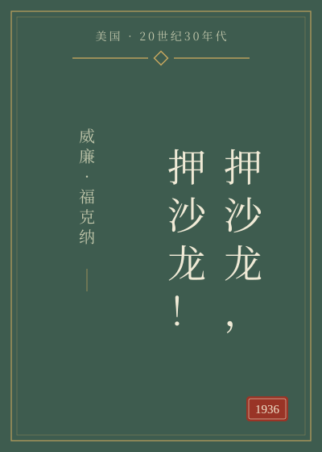

押沙龙，押沙龙！
一、基本信息
| 作者 | 威廉·福克纳 |
|---|---|
| 成书/出版 | 1936年（作者页注记：通说待核——Britannica 未载年份） William Faulkner — Encyclopaedia Britannica（百科全书） |
| 国别/地区 | 美国 |
| 时代 | 现当代 · 20世纪30年代 |
| 体裁 | 长篇小说 |
| 语言 | 英语 |
《押沙龙，押沙龙！》讲述结构图（主题·结构图）
二、创作背景
作者页注记：押沙龙，押沙龙！——'（通说待核）'——Britannica 未载本作细节。
Britannica（B324）：福克纳1949诺奖；The Sound and the Fury——'radical technical experimentation'（交叉）。
题材（通说待核）：萨德本百年的兴衰——家族史的多重讲述。
三、内容脉络
（通说待核）萨德本：从西印度到密西西比种植园的'宏伟设计'。
（通说待核）多重叙述者拼图：昆丁与洛斯的追述。
四、主要人物表
| 人物 | 身份 | 说明 |
|---|---|---|
| 托马斯·萨德本 | 家族创建者 | （通说待核） |
| 昆丁 | 讲述者之一 | （通说待核） |
五、主题与艺术特点
- 家族史的讲述政治（通说待核）。
- 种族与血统的诅咒（通说待核）。
- 南方历史的多声部（B324 约克纳帕塔法语境）。
六、影响与评论
- Britannica：1949诺奖（B324）。
William Faulkner — Encyclopaedia Britannica（百科全书） - Britannica：'radical technical experimentation'（B324 交叉）。
William Faulkner — Encyclopaedia Britannica（百科全书）
七、阅读建议
难点
- 多重叙述嵌套。
- 美国南方种植园史。
- 《押沙龙，押沙龙！》中译本（上海译文等——通说待核）。
- 英文原版。
福克纳进阶；与《喧哗与骚动》对读。
八、待核实
- 1936年出版（Random House说）待核。
- 萨德本人名与情节细节核对（通说）。
- 圣经押沙龙原型的对应关系待核。